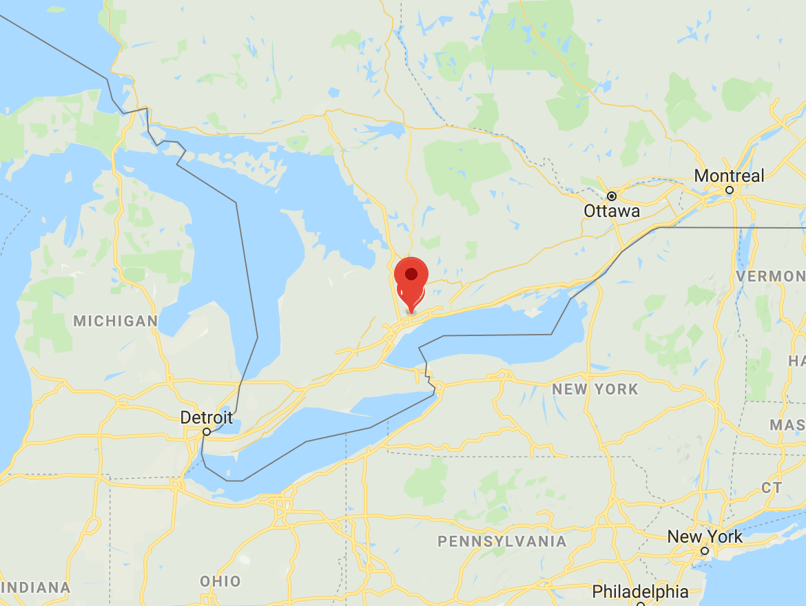
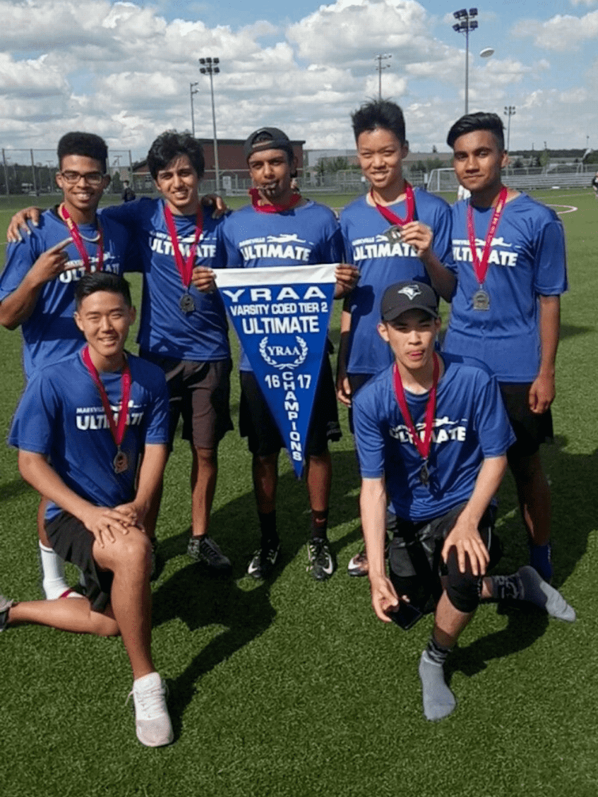

Being away from home for the past four months has really shown me how much I love Markham. Had some great moments during my four years of high school at Markville Secondary.

Education
University of Waterloo
I am currently studying at the University of Waterloo. I chose Waterloo's prestigous engineering program because of their co-op program as well as their desire for innovation.
Major
Management Engineering
Management Engineering is a one-of-a-kind interdisciplinary program (Only one in Canada!) with a split focus in computer science and systems engineering.

Sports
Ultimate Frisbee
Basketball
Flag Football
Currently, I am playing intramural sports. In high school, I was on the varsity ultimate frisbee team where we finished first overall in all of York Region my senior year.
Hobbies
Toronto Maple Leafs
NCAA College Football
Guitar
Cooking
In my spare time, I like to keep myself busy with smaller pastimes. I love making music on my guitar, trying new recipes and watching my favorite teams play. Go leafs go!
As an engineering major, I am constantly exposed to the wonders of new technology. It motivates me to constantly expand my skills and knowledge. I have BIG plans for the future :)